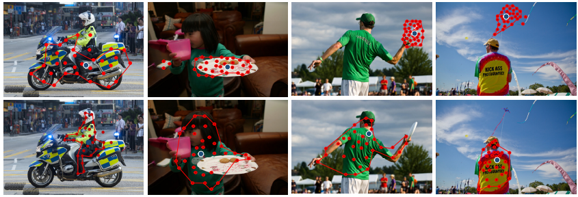
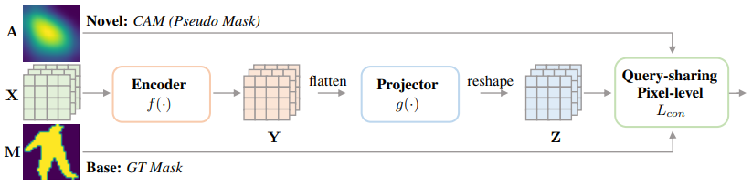
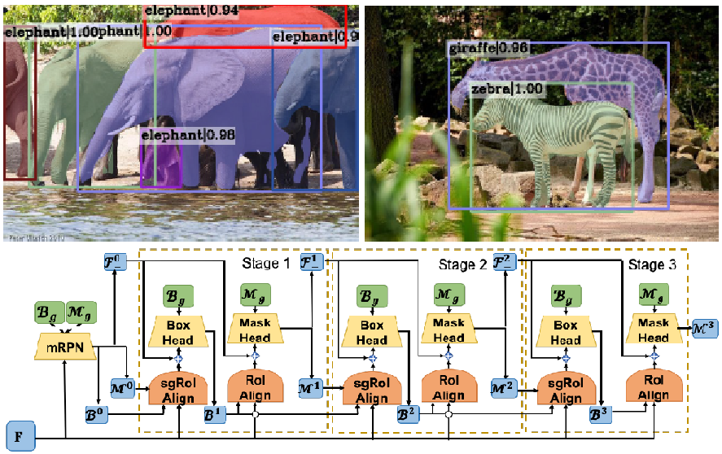
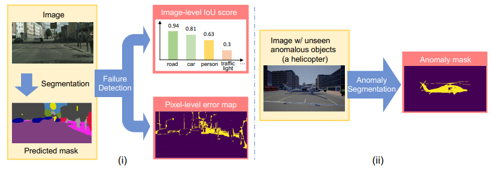
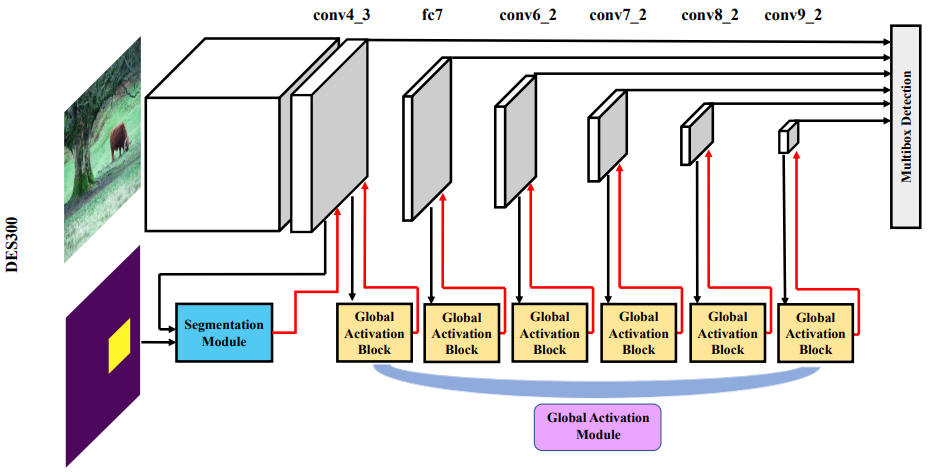
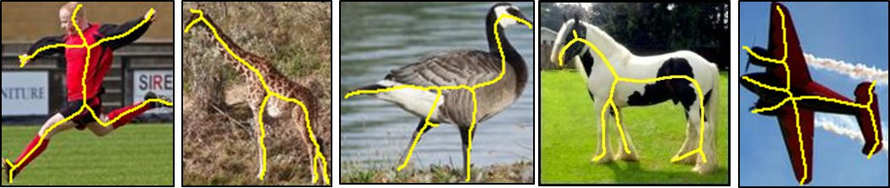
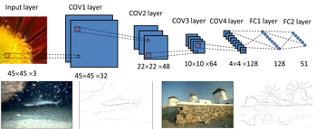
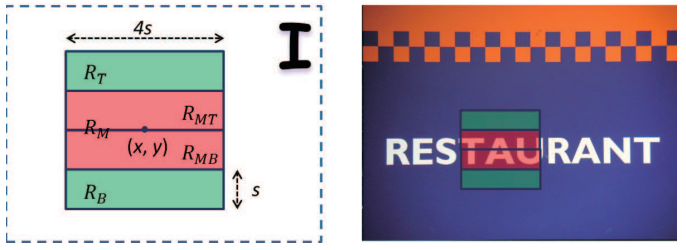

Feng Wang, Huiyu Wang, Chen Wei, Alan Yuille, Wei Shen. CP2: Copy-Paste Contrastive Pretraining for Semantic Segmentation. European Conference on Computer Vision (ECCV), Tel-Aviv, Israel, 2022.
(PDF)
Danyang Tu, Xiongkuo Min, Huiyu Duan, Guodong Guo, Guangtao Zhai, Wei Shen. Iwin: Human-Object Interaction Detection via Transformer with Irregular Windows. European Conference on Computer Vision (ECCV), Tel-Aviv, Israel, 2022.
(PDF)
Xuehui Wang, Kai Zhao, Ruixin Zhang, Shouhong Ding, Yan Wang, Wei Shen. ContrastMask: Contrastive Learning to Segment Every Thing. IEEE Conference on Computer Vision and Pattern Recognition (CVPR), New Orleans, USA, 2022.
(PDF)
Huiyu Duan, Wei Shen, Xiongkuo Min, Danyang Tu, Jing Li, Guangtao Zhai. Saliency in Augmented Reality. ACM International Conference on Multimedia (ACM MM), Lisbon, Portugal, 2022.
(PDF)
Hao Ding, Siyuan Qiao, Alan Yuille, Wei Shen. Deeply Shape-guided Cascade for Instance Segmentation. IEEE Conference on Computer Vision and Pattern Recognition (CVPR), Nashville, USA, 2021.
(PDF)
Yingda Xia, Yi Zhang, Fengze Liu,Wei Shen, Alan Yuille.
Synthesize then Compare: Detecting Failures and Anomalies for Semantic Segmentation.
European Conference on Computer Vision (ECCV), Glasgow, UK, 2020 [Oral].
(PDF)
Zhishuai Zhang, Wei Shen, Siyuan Qiao, Yan Wang, Bo Wang, Alan Yuille.
Robust Face Detection via Learning Small Faces on Hard Images.
IEEE Winter Conference on Applications of Computer Vision (WACV), Colorado, USA, 2020.
(PDF)
Peng Tang, Xinggang Wang, Song Bai, Wei Shen, Xiang Bai, Wenyu Liu, Alan Yuille.
PCL: Proposal Cluster Learning for Weakly Supervised Object Detection.
IEEE Trans. Pattern Analysis and Machine Intelligence, 2020.
(PDF)
Zhishuai Zhang, Siyuan Qiao, Cihang Xie, Wei Shen, Bo Wang, Alan Yuille.
Single-Shot Object Detection with Enriched Semantics.
IEEE Conference on Computer Vision and Pattern Recognition (CVPR), Salt Lake City, USA, 2018.
(PDF)
Kai Zhao, Wei Shen, Shanghua Gao, Dandan Li, Ming-Ming Cheng.
Hi-Fi: Hierarchical Feature Integration for Skeleton Detection.
International Joint Conference on Artificial Intelligence (IJCAI), Stockholm, Sweden, 2018.
(PDF)
Wei Shen, Kai Zhao, Yuan Jiang, Yan Wang, Xiang Bai, Alan Yuille.
DeepSkeleton: Learning Multi-task Scale-associated Deep Side Outputs for Object Skeleton Extraction in Natural Images.
IEEE Trans. Image Processing, 2017.
(PDF)
Siyuan Qiao, Wei Shen, Weichao Qiu, Chenxi Liu, Alan Yuille.
ScaleNet: Guiding Object Proposal Generation in Supermarkets and Beyond.
IEEE International Conference on Computer Vision (ICCV)Venice, Italy, 2017.
(PDF)
Wei Shen, Kai Zhao, Yuan Jiang, Yan Wang, Zhijiang Zhang, Xiang Bai.
Object Skeleton Extraction in Natural Images by Fusing Scale-associated Deep Side Outputs.
IEEE Conference on Computer Vision and Pattern Recognition (CVPR), Las Vegas, USA, 2016.
(PDF)
Zheng Zhang, Chenquan Zhang, Wei Shen, Cong Yao, Wenyu Liu, Xiang Bai.
Multi-Oriented Text Detection with Fully Convolutional Networks.
IEEE Conference on Computer Vision and Pattern Recognition (CVPR), Las Vegas, USA, 2016.
(PDF)
Wei Shen, Xiang Bai, Zihao Hu, Zhijiang Zhang.
Multiple Instance Subspace Learning via Partial Random Projection Tree for Local Reflection Symmetry in Natural Images.
Pattern Recognition, 52(4): 306-316, 2016.
(PDF)
Wei Shen, Xinggang Wang, Yan Wang, Xiang Bai, Zhijiang Zhang.
DeepContour: A Deep Convolutional Feature Learned by Positive-sharing Loss for Contour Detection.
IEEE Conference on Computer Vision and Pattern Recognition (CVPR), Boston, USA, 2015.
(PDF)
Zheng Zhang, Wei Shen, Cong Yao, Xiang Bai.
Symmetry-Based Text Line Detection in Natural Scenes.
IEEE Conference on Computer Vision and Pattern Recognition (CVPR), Boston, USA, 2015.
(PDF)